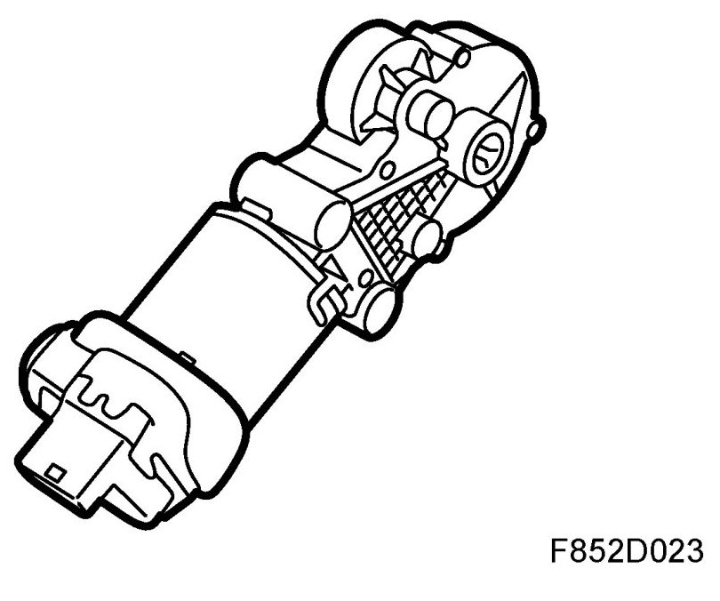
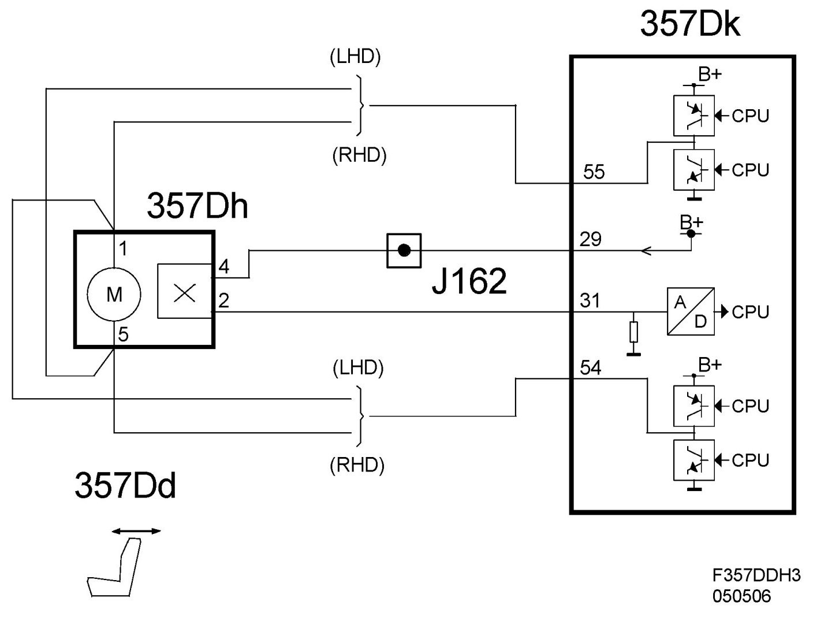
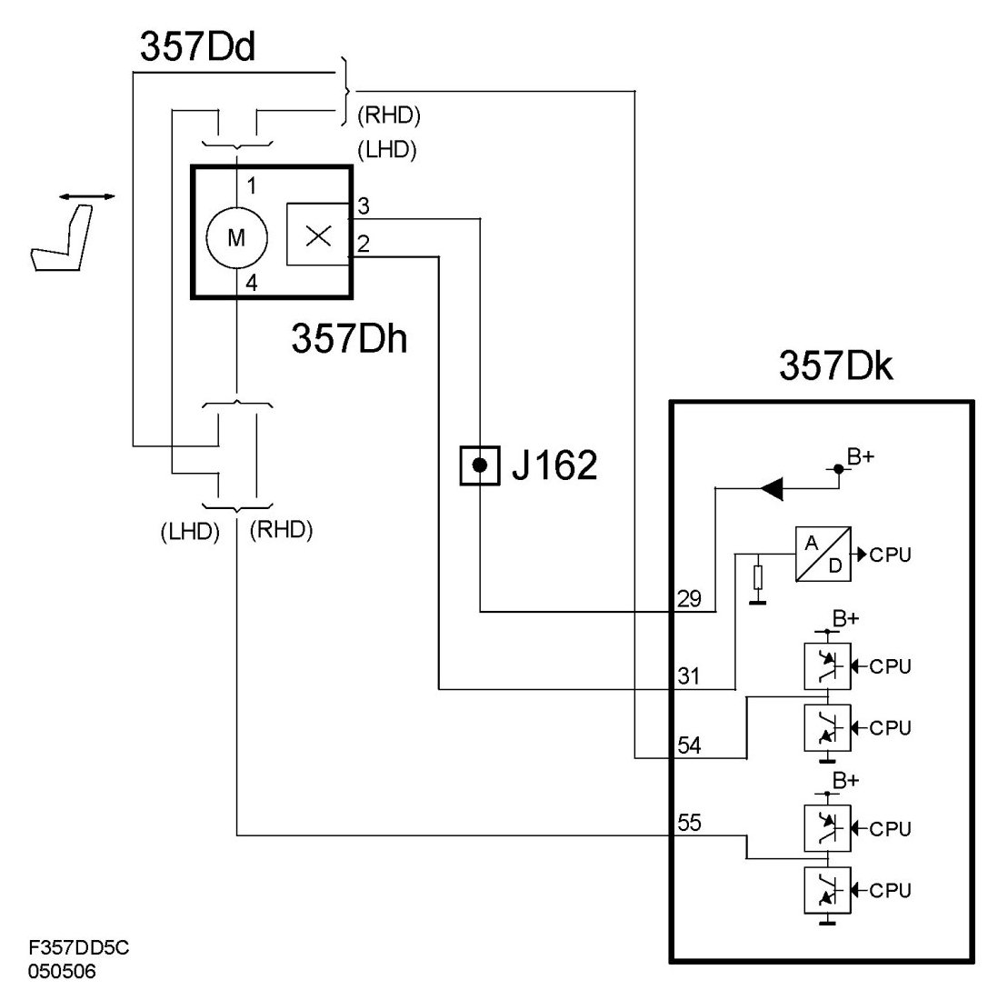

Position Sensor, Backrest Adjustment, Electrically Operated Driver's Seat With Memory (357DH)
Position Sensor, Backrest Adjustment, Electrically Operated Driver's Seat With Memory (357Dh)
Location
Position sensor, backrest adjustment, electrically operated driver's seat with memory (357Dh).

Main task
To give information that is necessary for the seat control module to be able to calculate the rake of the backrest in relation to the seat.
Type
The position sensor (pulse sensor) for the seat is a Hall sensor integrated in the motor for raising and lowering the seat. The motor shaft has a 2-pole magnetic ring (north/south) mounted on it. There is a Hall sensor in the motor end plate that is sensitive to changes in magnetic field.
Connect
The Hall sensor element pin 4 is voltage fed with B+ from the seat control module (357Dk) pin 29. The Hall sensor element is influenced by the magnetic ring, which changes polarity 2 times per revolution, the voltage from the Hall sensor pin 2 to the control module pin 31 is decisive in order to calculate the speed. The control module input interprets a voltage of 1.1 to 2.5 V as low and a voltage between 3.5 and 4.8 V as high.
Diagram 4D/5D

Diagram CV
